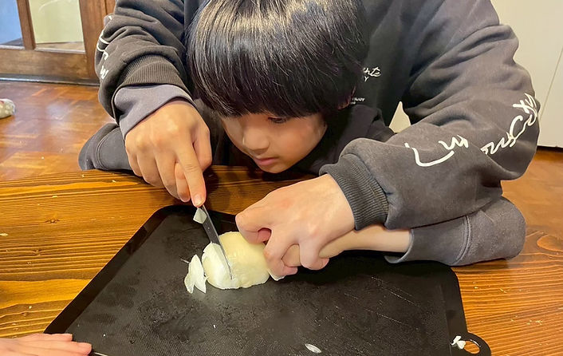
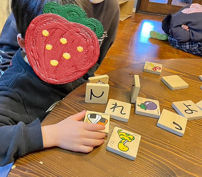
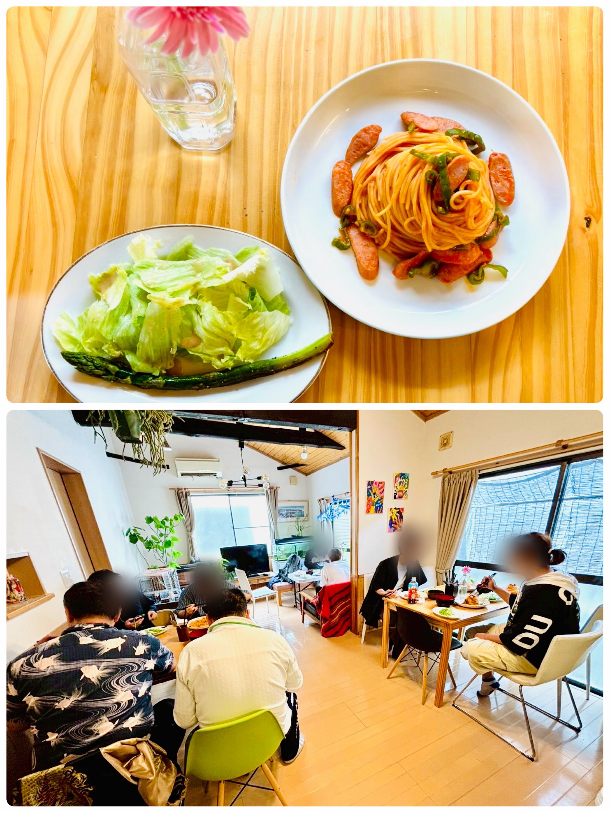

「できた」の
自己肯定感
小さな成功体験を積み重ね、自信につなげます。
FUN, SAFE, AND YOURSELF.
一人ひとりの「できた」と「やってみたい」を育み、
ご家族と一緒に成長を見守る場所です。



ABOUT AIR
私たちの周りの「当たり前の存在」であるように。
誰もが自然体でいられて、安心して過ごせる居場所をつくりたい。その思いを込めて、私たちは「air（エアー）」と名付けました。
船橋市で児童福祉に携わってきた経験を活かし、一人ひとりの個性やペースを大切にしながら、地域に根ざした支援を届けています。
小さな成功体験を積み重ね、自信につなげます。
心とからだをゆるめて過ごせる居場所をつくります。
興味や得意を見つけ、新しい一歩を応援します。
OUR SERVICES
目的や過ごし方に合わせて、それぞれに合った支援の時間を用意しています。
01 / AFTER SCHOOL DAY SERVICE
障がいや発達に特性のあるお子さまが、放課後や休日を安心して過ごせる場所です。専門スタッフが一人ひとりの様子に合わせて関わり、日々の成長を支えます。
放課後等デイサービスガイドラインに基づく「5領域」を土台にしながら、一人ひとりのペースに合わせて支援します。
放課後等デイサービスを詳しく見る →02 / DAYTIME TEMPORARY SUPPORT
障がいのある方に日中の活動の場を提供し、ご家族の休息やゆとりにもつながる福祉サービスです。安心して過ごせる環境の中で、見守りや余暇活動を支えます。
AIR PROGRAM
学び、遊び、生活体験をバランスよく取り入れながら、毎日の活動を組み立てています。
子どもたちの小さな自信を、一つずつ育てていきます。
宿題や個別課題に取り組みながら、「できた」という実感を積み重ねます。
遊びや会話を通して、人との関わり方を無理なく練習します。
手を動かす楽しさや、みんなで作る達成感を大切にします。
からだを動かしながら、地域で過ごす経験や楽しみを広げます。

みんなで囲む、あたたかな食卓。AIR DINING
温かい食事を囲みながら、ほっとひと息つける場所です。
air食堂では、就労継続支援B型をご利用の皆さんにも楽しんでいただけるよう、毎日の食事づくりに取り組んでいます。
日々のメニューを見る ↗HOW TO USE
初めての方にも分かりやすいよう、見学から利用開始まで丁寧にご案内します。
お電話またはメールで、現在のご状況やご希望をお聞かせください。
施設の雰囲気をご覧いただきながら、支援内容や利用方法をご説明します。
お住まいの市区町村の障害福祉窓口でお手続きいただきます。進め方もご相談いただけます。
内容をご確認のうえご契約いただき、ご利用開始となります。
放課後等デイサービスは「障害福祉サービス受給者証（通所受給者証）」、日中一時支援は「地域生活支援事業受給者証」が必要です。
FACILITIES
NEWS & BLOG
活動の様子や行事のお知らせ、日々の記録はInstagramで発信しています。
CONTACT
ご利用についてのご質問や施設見学のご希望など、まずはお気軽にご相談ください。
見学予約・ご相談内容の入力は専用ページから行えます。